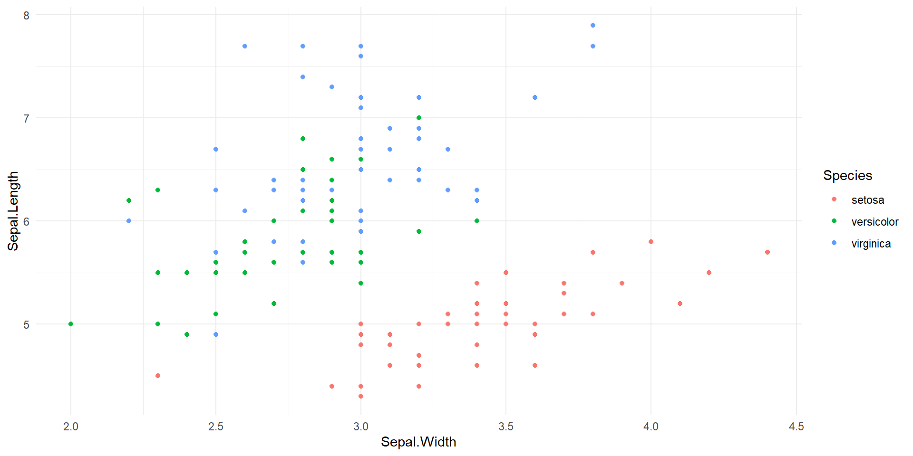
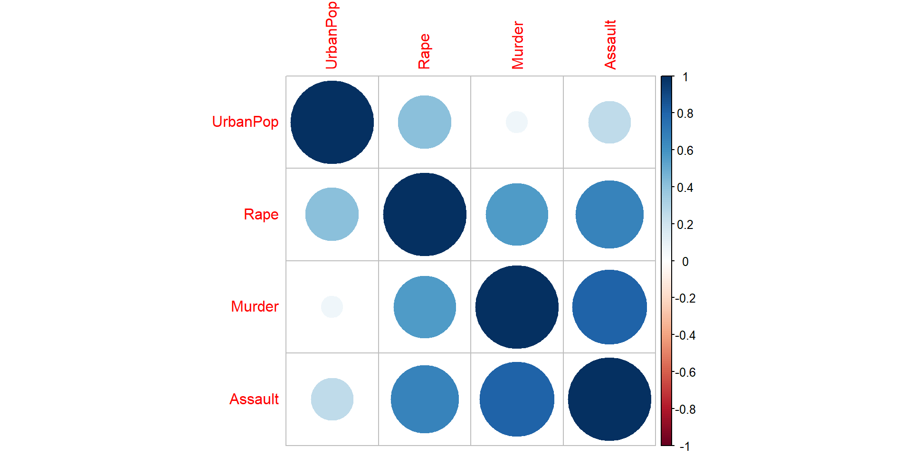
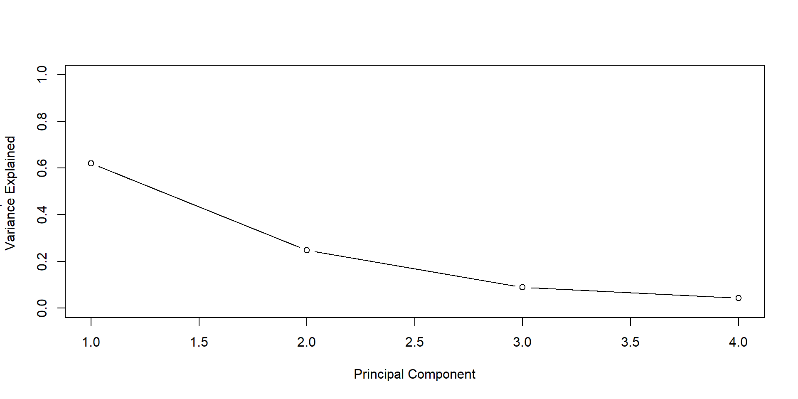

See This!
Solichatus Zahroh
24 Oct 2023
Introduction
This is the example of the Week 2 exercise. The contents in this presentation are not related to each other.
Figure
The first figure is a centered still figure.
A dinosaur generated by AI
The above figure is center-aligned
The caption is left-aligned
Interactive Table
This table represents names, age, and education of six people (not real data).
| No | Name | Age | Education |
|---|---|---|---|
| 1 | Abby | 10 | Elementary school |
| 2 | Boddie | 22 | WO |
| 3 | Clara | 32 | VWO |
| 4 | Donny | 15 | HAVO |
| 5 | Easter | 51 | MBO |
| 6 | Fey | 4 | Kindergarten |
Moving Figure
This figure shows animation of three squares to three circles in three different colours.
Two-Column Slide
A travel survey is conducted to find out the movement patterns of people in a particular area (Harding et al. (2021)). Initially, it was conducted with paper-based interviews and recently travel surveys can be conducted through an application or web-based surveys by collecting travel diaries completed by respondents (Shen and Stopher (2014)). However, the efficacy of this approach is somewhat limited as each respondent should document the daily activities undertaken. An innovation in travel surveys by collecting respondents’ locations using Global Positional System (GPS) sensor data was recognized by Statistics Netherlands (Centraal Bureau voor de Statistiek or CBS) in 2017.
The growing popularity of smartphones is enabling the emergence of smart city applications (F. De S. Soares et al. (2019)). Collecting GPS sensor data could be useful for identifying movement patterns and portraying the movement behaviour (Calabrese et al. (2013)). Based on the GPS sensor data, an automated diary is generated for the survey respondent, wherein each day is discretized into distinct segments representing stationary periods (stops) and periods of travel (tracks). This approach, in addition, can reduce recall bias, can collect a lot of data with minimal effort and is less time-consuming, although validation problems might be encountered (Zhou et al. (2022)).
For supplementary information, these two Yu Xiao et al. (2012), Omrani (2015) are good references.
Equation
This is the example of an equation. When \(a_n\) is \(3n+1\) then \(n\) is odd and when \(n\) is even \(a_n =n / 2\). \[\begin{equation*} a_n = \begin{cases} 3n + 1 & \text{ if } n \text{ is odd} \\ \int_{1}^{n} 2x \,dx & \text{ otherwise} \end{cases} \end{equation*}\]
For example, if \(n=3,4,5\), then \(a_n\): \[\begin{align} a_3 = 3 \times 3 + 1 = 10 \\ a_4 = 4^2 - 1^2 = 15\\ a_5 = 3 \times 5 + 1 = 16 \end{align}\]
Reference List
Here are the list of references (Two-Column slide).
Bibliographic
R-code Displayed Not Executed
In this program, we convert decimal number entered by the user into binary using a recursive function. Decimal number is converted into binary by dividing the number successively by 2 and printing the remainder in reverse order.
R-code Executed Not Displayed
This is an example of the ggplot implementation to create a plot. The dataset used in this code is iris dataset.
Cached and Labeled R-code
This data set contains statistics, in arrests per 100,000 residents for assault, murder, and rape in each of the 50 US states in 1973. Also given is the percent of the population living in urban areas. A data frame with 50 observations on 4 variables. - Murder numeric Murder arrests (per 100,000) - Assault numeric Assault arrests (per 100,000) - UrbanPop numeric Percent urban population - Rape numeric Rape arrests (per 100,000)

PC1 PC2 PC3 PC4
Murder -0.5358995 0.4181809 -0.3412327 0.64922780
Assault -0.5831836 0.1879856 -0.2681484 -0.74340748
UrbanPop -0.2781909 -0.8728062 -0.3780158 0.13387773
Rape -0.5434321 -0.1673186 0.8177779 0.08902432
Reproducible Environment
- The project is out-of-sync -- use `renv::status()` for details.The following package(s) are in an inconsistent state:
package installed recorded used
askpass y y n
curl y y n
openssl y y n
packrat y y n
processx y y n
ps y y n
quarto y y n
rsconnect y y n
rstudioapi y y n
sys y y n
See ?renv::status() for advice on resolving these issues.Solichatus Zahroh - UU